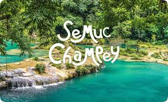

Mis Pasatiempos
- Jugar ajedrez
- Programar
- Escuchar música
Soy un tipo relajado, apasionado por lo que hago, y siempre estoy listo para todo.
A la edad de 22 años, he tenido la fortuna de explorar muchos destinos alrededor de Guatemala. Esta tabla es un recorrido por esos lugares que más me gustaron y quiero compartir un pedacito de esas aventuras, viajes emocionantes a través de los lugares que han dejado una huella imborrable en mi corazón, una ventana a las experiencias que me han transformado.
| Lugar | Descripción | Imagen |
|---|---|---|
| Semuc Champey | Semuc Champey es un paraíso natural localizado en Alta Verapaz que fue declarado Monumento Natural y es área protegida en Guatemala. |  |
| La Laguna Lachuá | La Laguna Lachuá se encuentra ubicada en el municipio de Cobán, departamento de Alta Verapaz. Sus abundantes riachuelos en los alrededores y hermosa vegetación sirven para construir un paraíso para la vida silvestre de Guatemala. | |
| Hun Nal Ye | Hun Nal Ye es un destino ideal para los amantes de las aventuras acuáticas en medio de la naturaleza. Es un lugar turístico con pozas cristalinas y cenotes para descubrir. |  |
| Lugar | Video | Ubicación |
|---|---|---|
| Semuc Champey | ||
| La Laguna Lachuá | ||
| Hun Nal Ye |